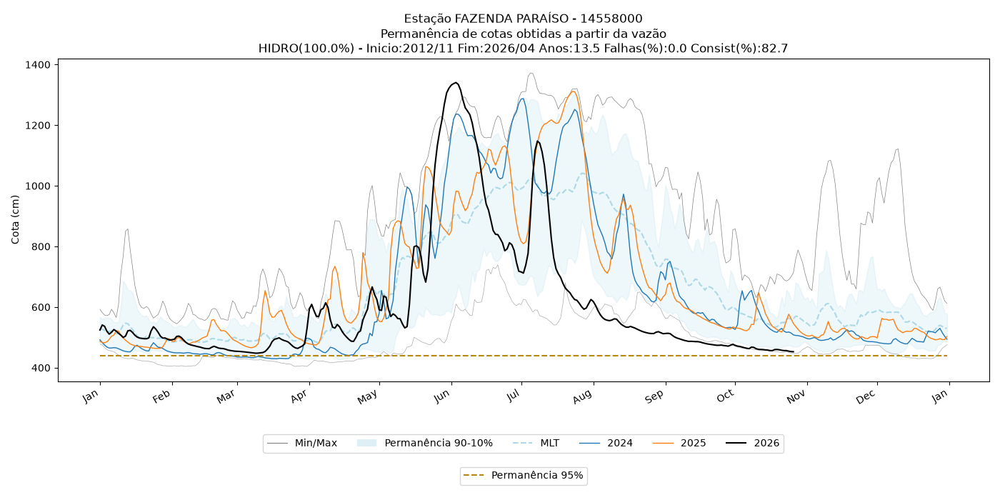

Curvas de Permanência
Consulte cotas históricas, acompanhe os últimos anos e gerencie os limites de referência das estações.
Acessar móduloSistema Hidrológico da COVEC
Entre com sua conta institucional Microsoft para acessar as ferramentas de análise hidrológica.
Acesse a página de entrada da Microsoft e informe o código:
Acesso institucional · as consultas usam suas permissões no banco de dados.
SISTEMA HIDROLÓGICO DA COVEC
Selecione um módulo para começar. As estações e os limites de referência são compartilhados pela equipe.
Consulte cotas históricas, acompanhe os últimos anos e gerencie os limites de referência das estações.
Acessar móduloUm espaço para as análises de precipitação da equipe.
Modelagem hidrológica de chuva e vazão com o modelo CN3S.
Curva histórica salva e observações dos três últimos anos.

Prévia com o gráfico já salvo da estação. Na aplicação, a telemetria será consultada ao selecioná-la.
Edite os nomes e os valores em centímetros.
| Nome do limite | Cota (cm) | Remover |
|---|